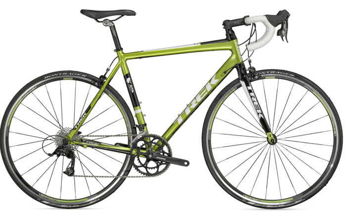

|  |
Dan's Bicycle SiteThis is by first site dedicate to my Bikes! In this site I will talk about my bike that I bought from Target, it was a colbolt blue Royce Union. View my contact information. |
| Adobe Indesign | ⭐⭐⭐⭐⭐ |
| Adobe Illustrator | ⭐⭐⭐⭐ |
| Adobe Photoshop | ⭐⭐⭐⭐⭐ |
| Affinity Publisher | ⭐⭐⭐⭐ |
| Blender 3d | ⭐⭐⭐ |